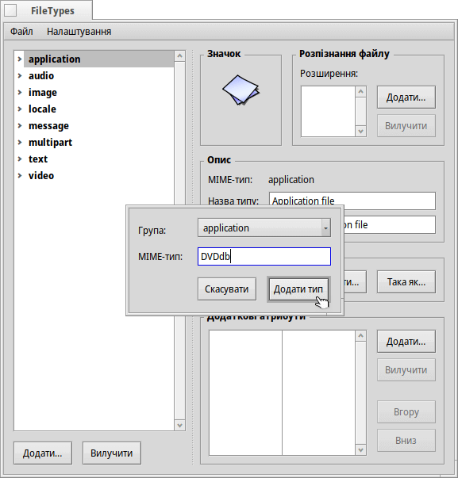
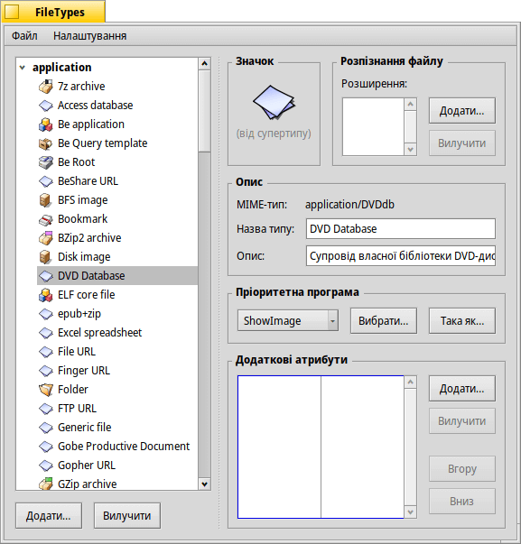
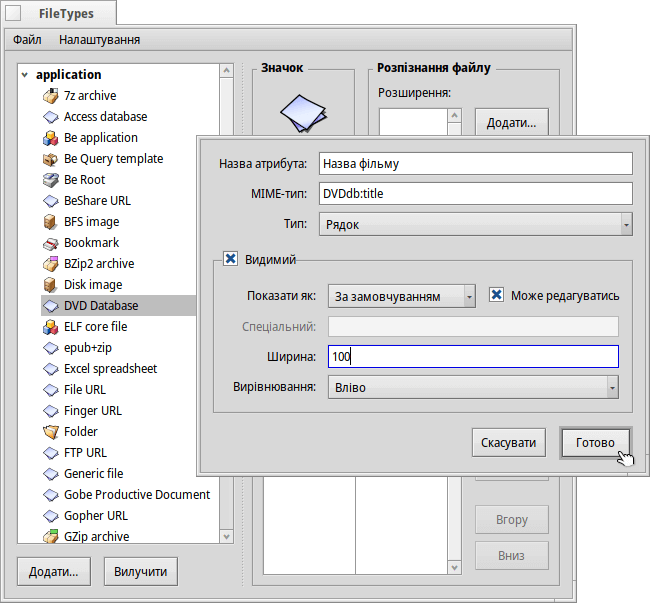
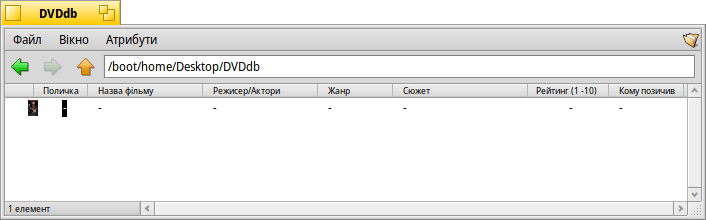
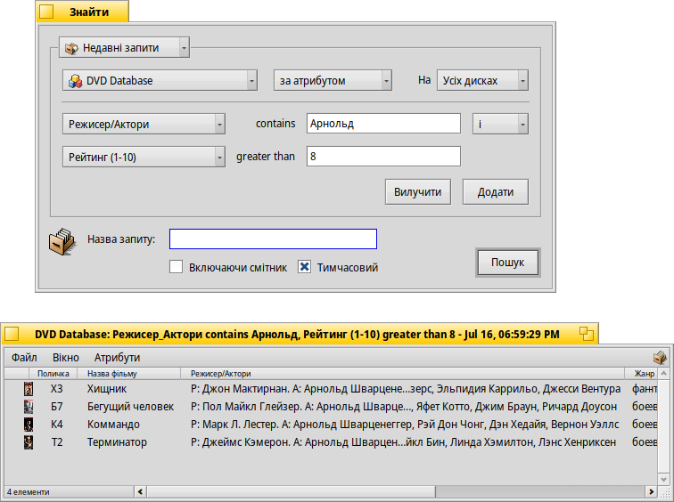

| Індекс |
|
Підготовчі заходи Створення власного типу файлу Значок Розпізнання файлу Опис Пріоритетна програма Додаткові атрибути Індексування Внесення даних Запити до бази даних |
Майстер-клас: Типи файлів, Атрибути, Індекси та Запити
На цьому навчальному заході ми покажемо, як використовувати Атрибути, Запити, Індекси і власні (встановлені користувачем) Типи файлів. Як приклад, ми створимо базу даних для супроводження нашої бібліотеки DVD-дисків.
 Підготовчі заходи
Підготовчі заходи
Давайте спочатку вирішимо, який тип файлу та які атрибути будуть відповідати нашим потребам. Спочатку я планував використати файл-закладку з посиланням на IMdB-сторінку фільму, але оскільки на той час Haiku не мала браузера з «закладками», як NetPositive для BeOS, я придумав ось що: Сам файл буде зображенням обкладинки фільму у форматі JPEG.
З появою WebPositive у Haiku з'явився браузер, який знову використовує файли закладок, тож Ви можете використовувати файли закладок замість зображень як основний тип файлу для файлів нашої бази даних.
У будь-якому випадку, до цих файлів ми додамо декілька атрибутів. Тут ми повинні вирішити, чи хочемо ми потім користуватися запитами для пошуку файлів такого типу (тоді необхідно додати атрибути до індексу) і якщо так, то якого типу це мають бути атрибути. Числа (INT, Float) можуть оброблятися інакше, ніж текст (</=/> проти is/contains/starts with).
Наступна інформація про DVD-диск може бути використана у якості атрибутів:
- Назва фільму
- Жанр
- URL-адреса, наприклад, IMdB
- Режисер/Актори
- Сюжет
- Рейтинг від 1 до 10
- Координати на полиці, наприклад, A2, B3; тому я знаходжу DVD і в реальному житті :)
- Якщо так, то хто позичав диск…
Створення власного типу файлу
Запустіть програму Filetypes і натисніть кнопку під ієрархічним списком ліворуч. Відкриється невелике діалогове вікно, у якому Ви можете вказати, до якої групи MIME належатиме Ваш новий тип файлів. Ви також можете створити абсолютно нову групу. Давайте помістимо його у групу «application» та встановимо параметр «MIME-тип» на DVDdb.
Тепер відкриється панель з параметрами Вашого нового типу файлу DVDdb (DVD Database):

Значок
Подвійний клік на значку відкриє редактор значків Icon-O-Matic, у якому можна створити значок для Вашого типу файлу. Ви можете перетягнути у вікно редактора готовий значок призначений для іншого типу файлів, щоб зробити з нього модифіковану версію під власні потреби.
Розпізнання файлу
Ви можете додати суфікси, такі як .txt, .jpg, .mp3, щоб розпізнати файли по їх розширенню. Це корисно при роботі з файлами у системах, які не використовують MIME-типи. Для нашого випадку це не підходить.
Опис
- Назва типу – З'являється, наприклад, у меню «Атрибути» у вікнах Tracker та в атрибуті «Тип» у вікні інформації про файл.
- Опис – Більш докладніший опис.
Пріоритетна програма
У цьому списку, який розкривається, показано усі програми, які можуть обробляти цей конкретний тип файлу. Тут Ви можете вибрати, яка програма має відкрити цей конкретний файл після подвійного кліку миші.
| відкриває діалогове вікно, у якому Ви можете вибрати програму для відкриття файлів цього типу. Тут ми виберемо програму ShowImage для показу обкладинки DVD. | ||
| відкриває діалогове вікно, в якому Ви можете вибрати будь-який файл для якого вже визначена пріоритетна програма, яку Ви шукаєте. |
Додаткові атрибути
Тут ми вводимо усі вибрані атрибути, які визначили на етапі підготовки. Натискання кнопки відкриває панель для введення всіх даних для нового атрибута. Ви можете редагувати існуючий атрибут простим подвійним кліком.
Назва атрибута – З'являється, наприклад, у вигляді заголовка стовпчика у вікні Tracker.
MIME-тип – Використовується для індексації та запитів до атрибута.
- Тип – Визначає значення, яке може містити атрибут, а отже, яким чином звертатися до нього у запиті.
- для звичайного тексту
- для двійкових даних : 0 (false) або >= 1 (true)
- для цілих чисел з різними діапазонами:
- : ± 255
- : ± 65,535
- : ± 4,294,967,295
- : ± 18,446,744,073,709,551,615
- для чисел з плаваючою комою одинарної точності
- для чисел з плаваючою комою подвійної точності
- для формату дати та часу
- Видимий – Цей чекбокс визначає, чи буде атрибут видимим у вікні Tracker взагалі. Оскільки Tracker буде інтерфейсом до нашої бази даних DVD, ми встановлюємо позначку на цьому чекбоксі і визначаємо вигляд атрибута:
- – Залиште значення «За замовчуванням», якщо значення повинні відображатися відповідно до параметра атрибута «Тип» (наприклад, рядок/ціле число/плаваюче число і т.д.). Інші варіанти такі:
- – Може використовуватися для показу одного з двох символів, дивіться нижче.
- – Показує ціле число як 1/60, наприклад, «90» стає «1:30».
- – Показує рейтинг від 1 до 10 у вигляді символів «зірочка».
- – Визначає, чи буде атрибут доступним для редагування у Tracker.
- – Визначає два символи, які використовуються для відображення позначки чекбокса. Наприклад, «xo» показуватиме «x» для всіх значень >0 і «o» для 0.
- – Ширина стовпчика атрибутів за замовчуванням у вікні Tracker.
- – Атрибут може відображатися з вирівнюванням по лівому краю, по центру або по правому краю.
- – Залиште значення «За замовчуванням», якщо значення повинні відображатися відповідно до параметра атрибута «Тип» (наприклад, рядок/ціле число/плаваюче число і т.д.). Інші варіанти такі:
Тепер, коли ми визначилися з атрибутами та їхніми параметрами, введіть усі дані до системи:
| MIME-тип | Тип атрибута | індексується? | Опис |
|---|---|---|---|
| DVDdb:title | текст | так | Назва фільму |
| DVDdb:genre | текст | так | Жанр |
| DVDdb:url | текст | ні | URL-адреса |
| DVDdb:cast | текст | так | Режисер/Актори |
| DVDdb:plot | текст | ні | Сюжет |
| DVDdb:rating | int-8 | так | Рейтинг (1-10) |
| DVDdb:coord | текст | ні | Поличка (місце диска) |
| DVDdb:lent | текст | так | Кому позичив |
Індексування
Перш ніж ми почнемо вводити дані у нашу маленьку базу даних DVD, ми повинні додати певні атрибути до Індексу. Тільки індексовані атрибути використовуються швидкими Запитами Haiku.
Отже, що ми будемо шукати в майбутньому? Ми, мабуть, не будемо запитувати «Що знаходиться на місці B4 полиці?» або «Чи містить URL-адреса IMdB або сюжет фільму слово „папа-зануда”?».
В такому разі, залишаються такі атрибути:
| MIME-тип | Тип атрибута |
|---|---|
| DVDdb:title | текст |
| DVDdb:genre | текст |
| DVDdb:cast | текст |
| DVDdb:rating | int-8 |
Щоб проіндексувати їх, ми відкриваємо термінал і просто додаємо один атрибут за іншим:
mkindex -t string DVDdb:title mkindex -t string DVDdb:genre mkindex -t string DVDdb:cast mkindex -t int DVDdb:rating
Параметр -t визначає тип атрибута, який є «рядком» для всіх, окрім рейтингу, який є цілим числом.
Внесення даних
Тепер все готово і ми можемо почати вносити деякі дані до нашої бази.
Оскільки наш базовий файл – це зображення обкладинки, ми переходимо на якийсь онлайн-ресурс, наприклад, IMdB, шукаємо наш перший фільм і зберігаємо обкладинку або постер фільму у нову папку, де ми хочемо зберігати наші DVDdb файли.
Відкривши цю папку ми побачимо звичайне вікно Tracker з одним файлом JPEG у ньому. Зробивши на файлі правий клік миші, змінюємо його тип файлу на application/DVDdb за допомогою доповнення Filetype. Більше інформації про це можете отримати у розділі Типи файлів.
Тепер увімкнемо відображення усіх наших атрибутів DVDdb через меню у вікні Tracker і переставимо стовпчики на свій розсуд:
Зробивши клік на поки що порожньому атрибуті (або натиснувши клавіші ALT E) ми переходимо у режим редагування і заповнюємо кожен атрибут. За допомогою клавіш TAB і SHIFT TAB Ви можете переміщатися між атрибутами.
У нашому прикладі ми звичайно починаємо із завантаженої обкладинки у форматі JPG і змінюємо її тип на application/DVDdb. Існує ще один елегантний спосіб створити файл для роботи. Просто зробіть копію порожнього файлу нашого типу до каталогу /boot/home/config/settings/Tracker/Tracker New Templates і перейменуйте його на DVDdb.
Зробивши правий клік миші у вікні Tracker, Ви знайдете новий запис шаблона у підменю окрім стандартного «Каталог або Папка».
Запити до бази даних
Через кілька годин кропіткої роботи ми створили невелику базу даних, за запитом до якої Ви зможете знайти усі фільми у яких головну роль виконував Арнольд Шварценеггер і які мають рейтинг 8… :)
Ви можете створити потрібний Вам макет розміщення атрибутів у вікні Tracker для відображення результатів пошукового запиту файлів певного типу.
Відкрийте папку з Вашими DVDdb-файлами і розмістіть стовпчики атрибутів так, як, по Вашому розумінню, потрібно представити результати пошукового запиту. Зробіть копію такого розміщення атрибутів (макета) за допомогою команди меню .
Відкрийте каталог /boot/home/config/settings/Tracker/DefaultQueryTemplates, створіть нову папку та перейменуйте її на група/тип-файлу, замінивши косу риску на підкреслення; у нашому випадку «application_DVDdb».
Відкрийте цю нову папку та вставте макет за допомогою команди меню . Вуаля:
